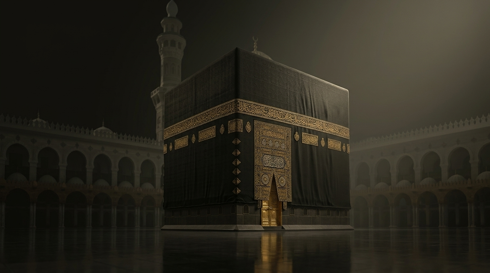

Syncing…
·
--:--:--
Prayer
Fitness
Dark
Light
Overview
Timetable
Activity
Calculation

Loading Hijri…
·
Preston
·
Sunrise --:--
Orbit
Reset
CURRENT WINDOW: —
NEXT PRAYER
—
--:--
in
--:--:--
—
Click card to toggle
—
Daily Progress
0 of 5
prayers completed today
0%
Streak
0 d
This Week
0 / 35
30-Day Rate
0%
Monthly Prayer Log
Select any past day to mark missed prayers completed
Month Year
Today
Mon
Tue
Wed
Thu
Fri
Sat
Sun
Selected Day
Today
0 / 5
Preston Monthly Timetable
Tap Today to highlight the current date or export to CSV
Loading…
Today
Print
Export CSV
Date
Hijri
Fajr
Sunrise
Dhuhr
Asr
Maghrib
Isha
Loading monthly timetable…
52-Week Activity
Best streak · 0 days
Mon
Wed
Fri
Less
More
30-Day Breakdown by Prayer
Calculation & Location
Method
Custom Angles
Moonsighting Committee
Muslim World League (MWL)
ISNA
Karachi
Egyptian
Umm Al-Qura
Fajr Angle
−
15.5°
+
Isha Angle
−
15.0°
+
Madhab (Asr)
Hanafi
Standard (Shafi / Maliki / Hanbali)
High Latitude
Angle-Based
One Seventh of Night
Middle of the Night
Minute Offsets (Madina Masjid Calibration)
Reset to Madina Masjid
Fajr
−
+6m
+
Dhuhr
−
+5m
+
Asr
−
0m
+
Maghrib
−
+3m
+
Isha
−
-1m
+
Location · Madina Masjid, Preston
Madina Masjid (Preston)
Blackburn
Burnley
Lancaster
Manchester
London